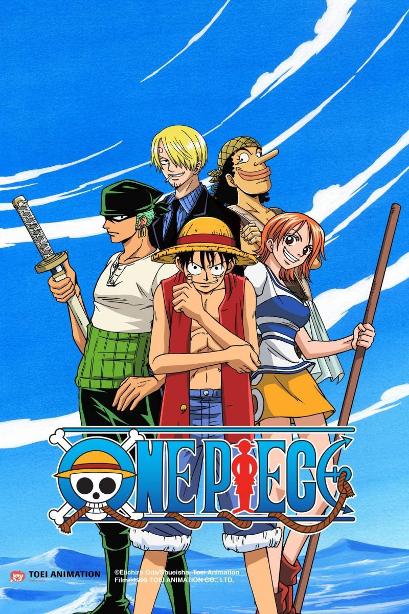
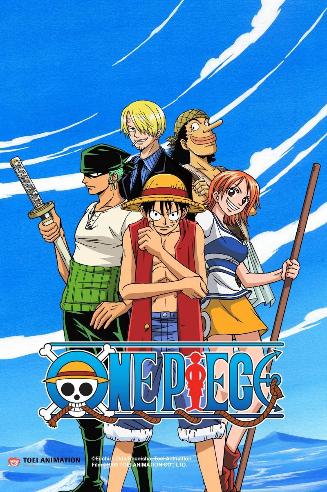
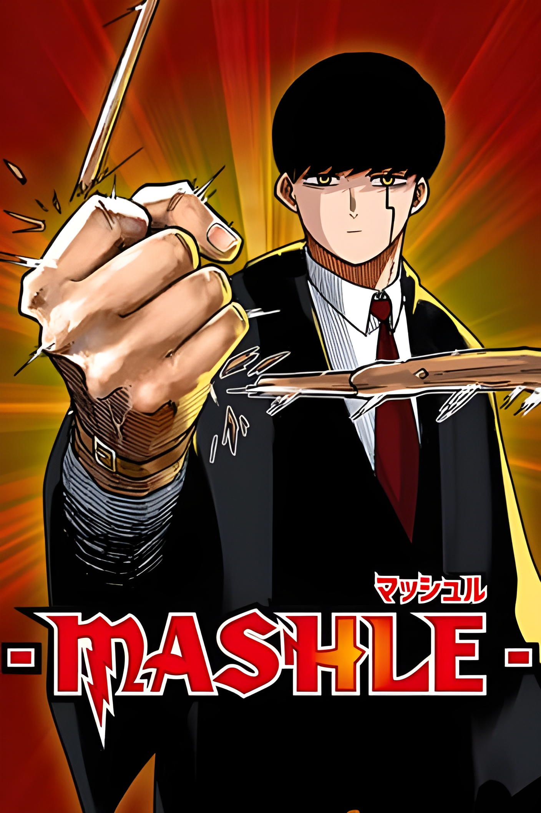
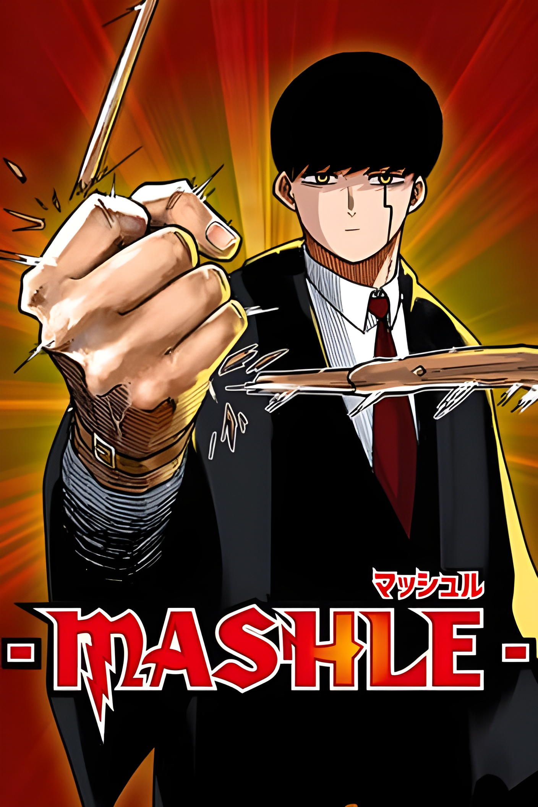
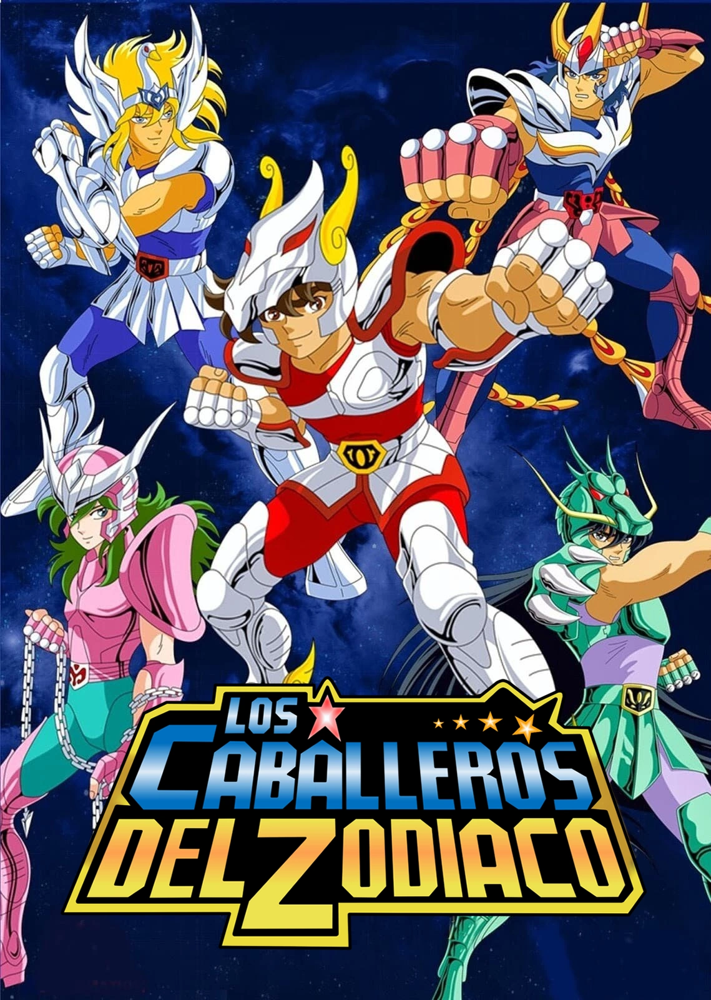
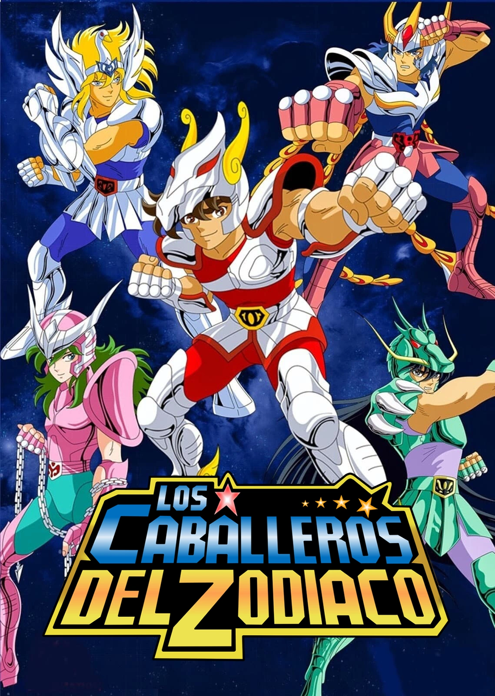

Witness the blood-soaked roots of a legend in Hellsing, the action-horror series that launched the careers of some of anime’s brightest stars. The vampire Arucard and his servant Seras Victoria protect the British Empire from ghouls and satanic freaks. Together, they haunt the shadows as a sinister force of good—and tonight the streets of England shall flow with the blood of their evil prey.
The most Popular
 

 

Shonen
Shoujo
 

Serie of the month


Denji is a young boy who works as a Devil Hunter with the “Chainsaw Devil” Pochita. One day, as he was living his miserable life trying to pay off the debt he inherited from his parents, he got betrayed and killed. As he was losing his consciousness, he made a deal with Pochita, and got resurrected as the “Chainsaw Man”: the owner of the Devil’s heart.
Listen all the Openings and Endings